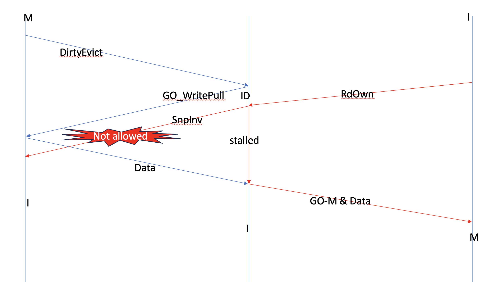
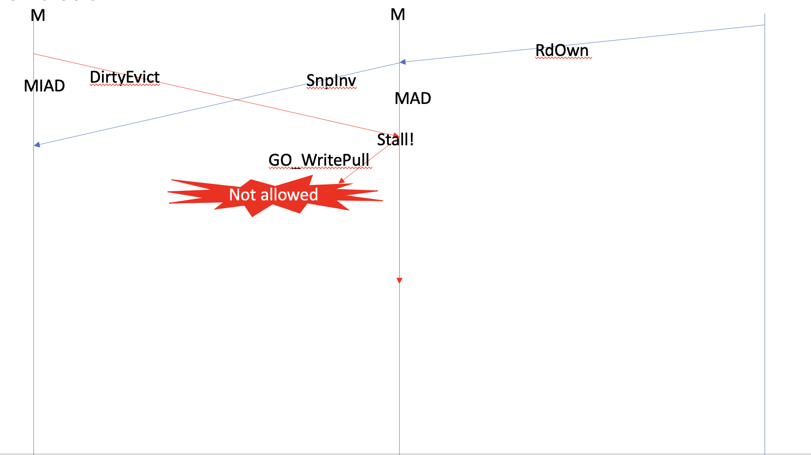
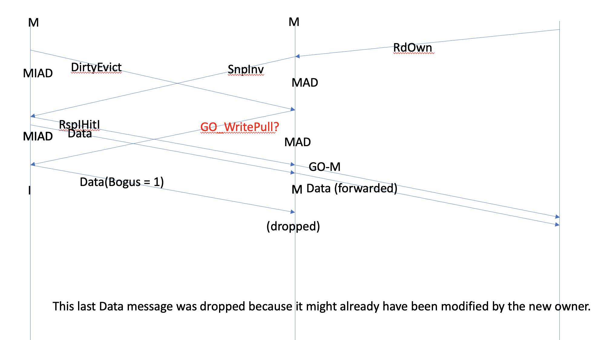
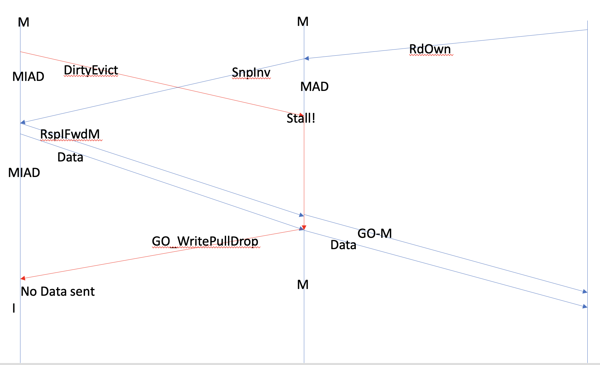
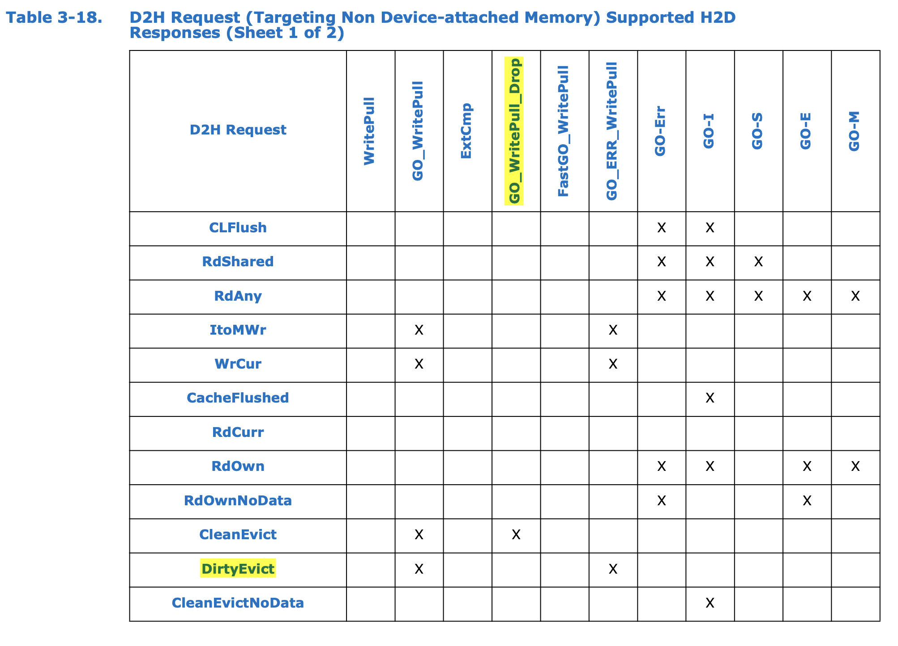
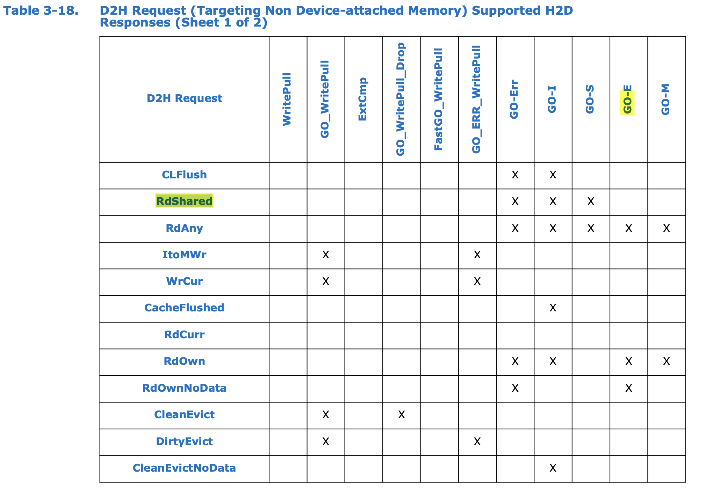
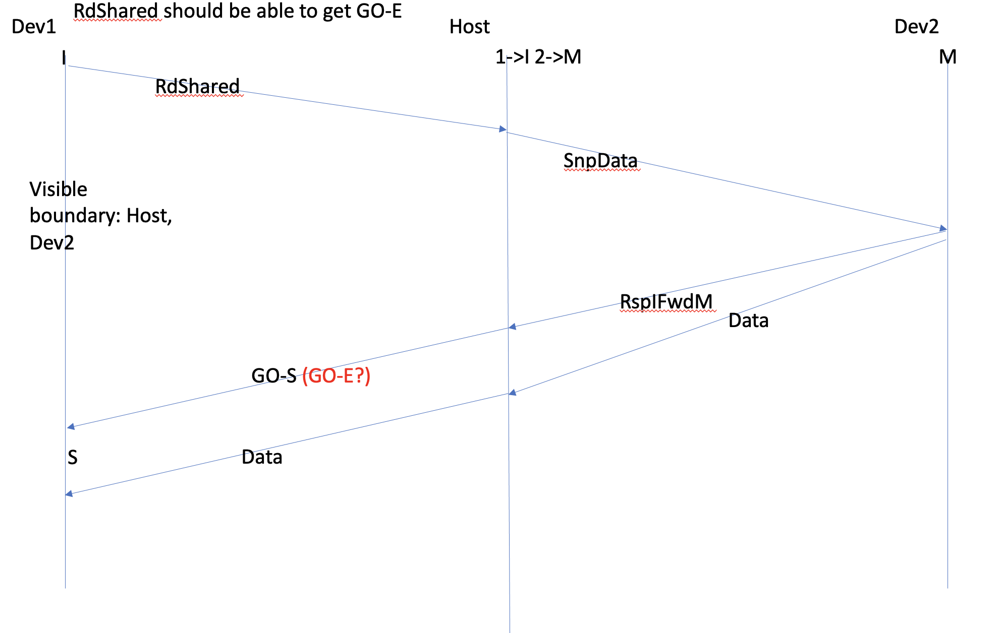

Comments for CXL.cache transaction layer specification--clarifications needed
Table of Contents
Suggestion 1
Relevant sections in spec (page 105-106):
3.2.5.2 Device/Host Snoop-GO-Data Assumptions
3.2.5.3 Device/Host Snoop/WritePull Assumptions
3.2.5.4 Snoop Responses and Data Transfer on CXL.cache Evicts
Summary of the suggestion:
Section 3.2.5.2 makes 3.2.5.3 half redundant,
and 3.2.5.3 makes 3.2.5.4 redundant.
Details
Rule 3.2.5.3 on page 106 suggests a type of "atomicity" of evictions and read transactions. By atomicity we mean that any request, be it an eviction or Rd*, once having been serialised at the host, is not allowed to be "interrupted" by another transaction.
For example, if an eviction gets serialised first, the
read request (RdOwn in picture) is stalled
so that the SnpInv can't be sent.

Or alternatively, if the read request goes first,
then the eviction cannot be processed:

Problem 1: the second part of 3.2.5.3 is redundant,
by 3.2.5.2 the GO_WritePull should not be sent because
a GO cannot be sent until the snoop has completed:
3.2.5.2 Device/Host Snoop-GO-Data Assumptions
......
When the host is sending a snoop to the device, the requirement is that no GO response will be sent to any requests
with that address in the device until after the
Host has received a response for the snoop and all
implicit writeback (IWB) data (dirty data forwarded in response to a snoop) has been received.
......
Therefore the second half of 3.2.5.3 is not needed.
Problems 2: redundant section
3.2.5.4 Snoop Responses and Data
Transfer on CXL.cache Evicts
Owner must track (interrupting?) snoop hit if cache state is changed.
It must set the Bogus field in all the (later, not including the current?) D2H data messages sent to the host.
The intent is to communicate to the host
that the request data was already sent as IWB data, so the data from the
Evict is potentially stale.
3.2.5.4 mandates
the Bogus field to be set in
the last D2H Data message in the below transaction sequence.

The transaction sequence should not be possible under 3.2.5.2, as
the GO_WritePull will not be sent until after the snoop returns Data and response.
Also at which point the host will know that the device has downgraded to Invalid, and therefore
send a GO_WritePullDrop. No Data needs to be sent unless the implementation is deliberately
un-optimal.

Proposed changes
First, we propose to update table 3-18, allowing DirtyEvict to get GO_WritePull, to accommodate the above transaction sequence.

We also propose to merge 3.2.5.4 into 3.2.5.3, and delete the second part of 3.2.5.3. The Relevant sections will be reduced to the following (3.2.5.2 included here for self-containedness):
3.2.5.2 Device/Host Snoop-GO-Data Assumptions
When the host returns a GO response to a device, the expectation is that a snoop arriving to the same address of the request receiving the GO would see the results of that GO. For example, if the host sends GO-E for an RdOwn request followed by a snoop to the same address immediately afterwards, then one would expect the device to transition the line to M state and reply with an RspIFwdM response back to the Host. **(Snoop pushes GO rule)** To implement this principle, the CXL.cache link layer ensures that the device will receive the two messages in separate slots to make the order completely unambiguous.
When the host is sending a snoop to the device, the requirement is that no GO response will be sent to any requests with that address in the device until after the Host has received a response for the snoop and all implicit writeback (IWB) data (dirty data forwarded in response to a snoop) has been received.**(GO not tailgating snoop rule)**
When the host returns data to the device for a read type request, and GO for that request has not yet been sent to the device, the host may not send a snoop to that address until after the GO message has been sent. Because the new cache state is encoded in the response message for reads, sending a snoop to an address without having received GO, but after having received data, is ambiguous to the device as to what the snoop response should be in that situation.
Fundamentally, the GO that is associated with a read request also applies to the data returned with that request. Sending data for a read request implies that data is valid, meaning the device can consume it even if the GO has not yet arrived. The GO will arrive later and inform the device what state to cache the line in (if at all) and whether the data was the result of an error condition (e.g., hitting an address region that the device was not allowed to access).
3.2.5.3 Device/Host Snoop/WritePull Assumptions
The device requires that the host cannot have both a WritePull and H2D Snoop active on CXL.cache to a given 64-byte address. The host may not launch a snoop to a 64- byte address until all WritePull data from that address has been received by the host. Conversely,(**The GO not tailgating snoop rule applies here**) the host may not launch a WritePull for a write until the host has received the snoop response (including data in case of Rsp*Fwd*) for any snoops to the pending writes address. Any violation of these requirements will mean that the Bogus field on the D2H Data channel will be unreliable.
3.2.5.4 Snoop Responses and Data Transfer on CXL.cache Evicts
To snoop cache evictions (for example, DirtyEvict) and maintain an orderly transfer of snoop ownership from the device to the host, cache evictions on CXL.cache must adhere to the following protocol.
**situation described by "if" excluded by 3.2.5.2** If a device Evict transaction has been issued on the CXL.cache D2H request channel, but has not yet processed its WritePull from the host, and a snoop hits the writeback, the device must track this snoop hit if cache state is changed, which excludes the case when SnpCur results in a RspVFwdV response. When the device begins to process the WritePull, if snoop hit is tracked the device must set the Bogus field in all the D2H data messages sent to the host. The intent is to communicate to the host that the request data was already sent as IWB data, so the data from the Evict is potentially stale.
Suggestion 2
Remove rule 11 in
3.2.5.14 General Assumptions
11. The Host must not send a second snoop request to an address until all responses, plus data if required, for the prior snoop are collected.
It seems verbose as
3.2.5.5 Multiple Snoops to the Same Address
The host is only allowed to have one snoop pending at a time per cacheline address per device.
The host must wait until it has received both the snoop response and all IWB data (if any) before dispatching the next snoop to that address.
already says the same thing.
Suggestion 3
According to table 3-18, a RdShared can only result in GO-S, not GO-E.

However, it may be beneficial to grant the device Exclusive
ownership.

In the above picture the requestor sends RdShared,
and Host sends SnpData to the owner (in M state),
M responds with RspIFwdM.
Now we know the requestor will have the sole copy.
However the spec says RdShared can only get GO-S/I/Err back, not GO-E.
Proposed changes:
Allowing RdShared to get E state.